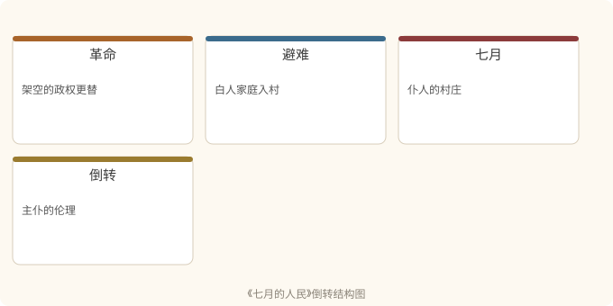

七月的人民
一、基本信息
| 作者 | 纳丁·戈迪默 |
|---|---|
| 成书/出版 | 1981年出版（Britannica：July's People (1981)） Nadine Gordimer — Encyclopaedia Britannica（百科全书） |
| 国别/地区 | 南非 |
| 时代 | 现当代 · 20世纪 |
| 体裁 | 长篇小说 |
| 语言 | 英语 |

《七月的人民》倒转结构图（主题·结构图）
二、创作背景
Britannica：戈迪默的小说'the devastating effects of apartheid on the lives of South Africans'（B258）——本作为架空叙事。
Britannica（B258）：'July's People (1981), A Sport of Nature (1987), My Son's Story (1990), The House Gun (1998)'为其代表作谱系。
三、内容脉络
架空：黑人革命成功后，白人斯梅尔斯一家逃往仆人七月的村庄避难（通说待核）。
主仆关系在乡土中的倒转与摩擦（通说待核）。
四、主要人物表
| 人物 | 身份 | 说明 |
|---|---|---|
| 莫琳 | 白人主妇 | 避难者（通说待核） |
| 七月 | 仆人 | 村庄的庇护者（通说待核） |
五、主题与艺术特点
- 主仆倒转的伦理实验（通说）。
- 隔离制度的' devastating effects'（B258）。
- 个人疏离与社会正义的张力（B258）。
六、影响与评论
- Britannica：1991年诺贝尔文学奖（B258）。
Nadine Gordimer — Encyclopaedia Britannica（百科全书） - 反乌托邦式的种族寓言（通说待核）。
Nadine Gordimer — Encyclopaedia Britannica（百科全书）
七、阅读建议
难点
- 南非政治史架空设定。
- 七月的名字关系（主仆称呼）。
- 《七月的人民》（译林出版社版本，通说待核）。
对照《耻》（库切）：南非的两种后种族书写。
八、待核实
- 斯梅尔斯一家/莫琳/七月人名核对。
- 被禁历史（南非书检——通说）待核。
- 结尾直升机之谜待核。
本页主要来源
纳丁·戈迪默的其他收录作品：七月的人民